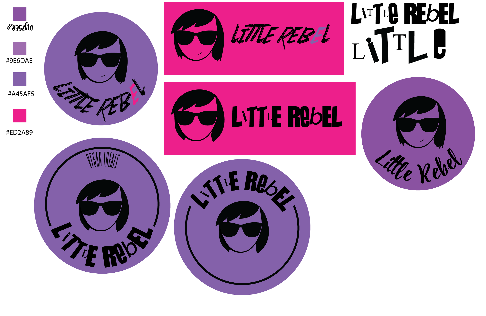
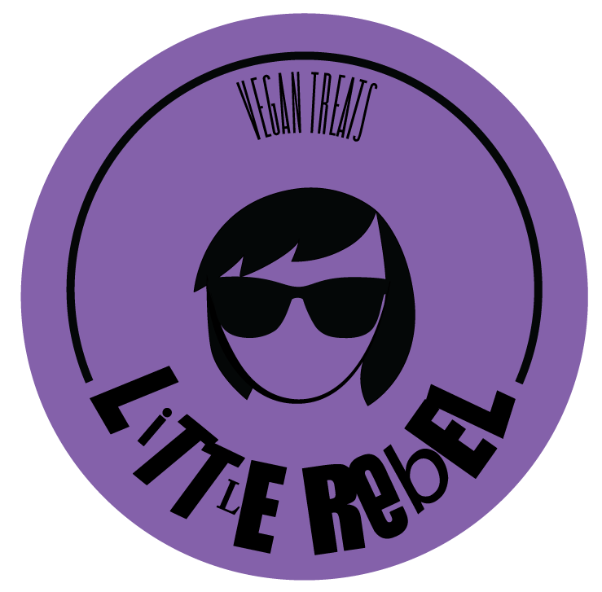
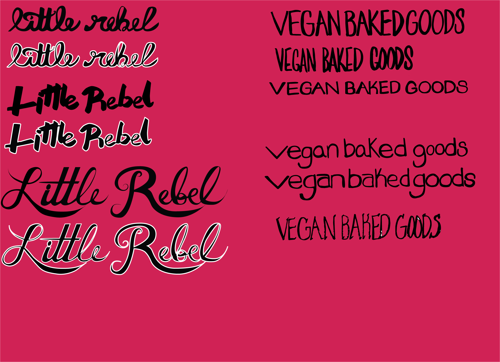
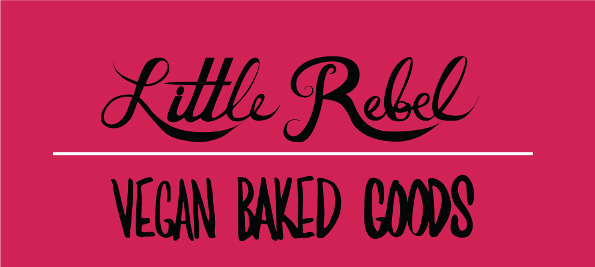
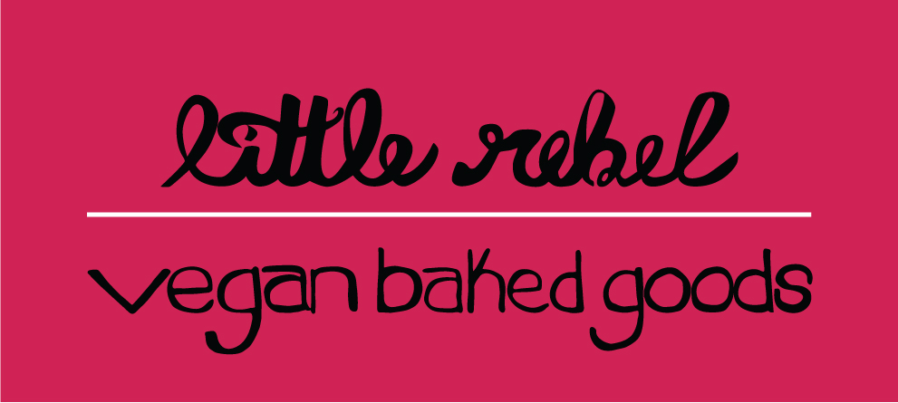
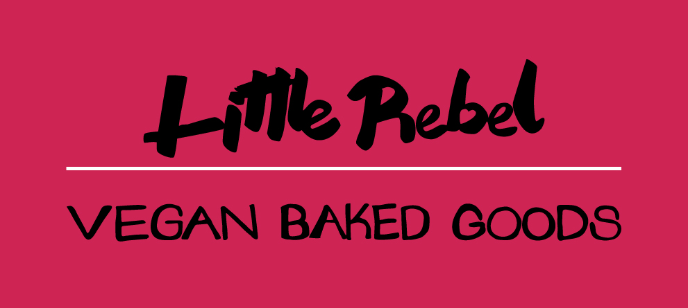

Little Rebel is a vegan baker based in L.A. She wanted a look that's clean, punky and feminine. I started by creating an image and bright, exciting colors that embodied those feelings and moved on from there.
Below is the first turnaround. I used the "Sex Pistols" inspired fonts and the tall thin font for the other text. The image was inspired by Little Rebel herself.
We decided that we wanted to move on from an image and go to hand lettering instead. Here are several vectorized examples of personalized fonts.
We ended up chosing six different hand lettered fonts and combined them to create three different logos.
I had a client who was a former lawyer turned real estate agent. He was looking to make a brand for himself and needed business cards as well as placards for home showing.
I had a client who was a former lawyer turned real estate agent. He was looking to make a brand for himself and needed business cards as well as placards for home showing.
